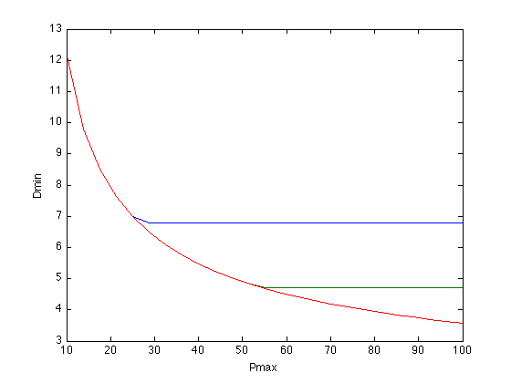

Digital circuit sizing
m = 7;
f = [1 0.8 1 0.7 0.7 0.5 0.5]';
e = [1 2 1 1.5 1.5 1 2]';
Cout6 = 10;
Cout7 = 10;
a = ones(m,1);
alpha = ones(m,1);
beta = ones(m,1);
gamma = ones(m,1);
N = 25;
Pmax = linspace(10,100,N);
Amax = [25 50 100];
min_delay = zeros(length(Amax),N);
disp('Generating the optimal tradeoff curve...')
for k = 1:length(Amax)
for n = 1:N
cvx_begin gp quiet
variable x(m)
cin = alpha + beta.*x;
clear cload;
cload(1) = cin(4);
cload(2) = cin(4) + cin(5);
cload(3) = cin(5) + cin(7);
cload(4) = cin(6) + cin(7);
cload(5) = cin(7);
cload(6) = Cout6;
cload(7) = Cout7;
d = (cload').*gamma./x;
power = (f.*e)'*x;
area = a'*x;
path_delays = [ ...
d(1) + d(4) + d(6);
d(1) + d(4) + d(7);
d(2) + d(4) + d(6);
d(2) + d(4) + d(7);
d(2) + d(5) + d(7);
d(3) + d(5) + d(6);
d(3) + d(7) ];
circuit_delay = ( max(path_delays) );
minimize( circuit_delay )
subject to
x >= 1;
power <= Pmax(n);
area <= Amax(k);
cvx_end
fprintf(1,' Amax = %3d Pmax = %6.2f delay = %3.2f\n', ...
Amax(k),Pmax(n),cvx_optval);
min_delay(k,n) = cvx_optval;
end
end
plot(Pmax,min_delay(1,:), Pmax,min_delay(2,:), Pmax,min_delay(3,:));
xlabel('Pmax'); ylabel('Dmin');
disp('Optimal tradeoff curve plotted.')
Generating the optimal tradeoff curve...
Amax = 25 Pmax = 10.00 delay = 12.21
Amax = 25 Pmax = 13.75 delay = 9.81
Amax = 25 Pmax = 17.50 delay = 8.51
Amax = 25 Pmax = 21.25 delay = 7.63
Amax = 25 Pmax = 25.00 delay = 6.98
Amax = 25 Pmax = 28.75 delay = 6.80
Amax = 25 Pmax = 32.50 delay = 6.80
Amax = 25 Pmax = 36.25 delay = 6.80
Amax = 25 Pmax = 40.00 delay = 6.80
Amax = 25 Pmax = 43.75 delay = 6.80
Amax = 25 Pmax = 47.50 delay = 6.80
Amax = 25 Pmax = 51.25 delay = 6.80
Amax = 25 Pmax = 55.00 delay = 6.80
Amax = 25 Pmax = 58.75 delay = 6.80
Amax = 25 Pmax = 62.50 delay = 6.80
Amax = 25 Pmax = 66.25 delay = 6.80
Amax = 25 Pmax = 70.00 delay = 6.80
Amax = 25 Pmax = 73.75 delay = 6.80
Amax = 25 Pmax = 77.50 delay = 6.80
Amax = 25 Pmax = 81.25 delay = 6.80
Amax = 25 Pmax = 85.00 delay = 6.80
Amax = 25 Pmax = 88.75 delay = 6.80
Amax = 25 Pmax = 92.50 delay = 6.80
Amax = 25 Pmax = 96.25 delay = 6.80
Amax = 25 Pmax = 100.00 delay = 6.80
Amax = 50 Pmax = 10.00 delay = 12.21
Amax = 50 Pmax = 13.75 delay = 9.81
Amax = 50 Pmax = 17.50 delay = 8.51
Amax = 50 Pmax = 21.25 delay = 7.63
Amax = 50 Pmax = 25.00 delay = 6.98
Amax = 50 Pmax = 28.75 delay = 6.48
Amax = 50 Pmax = 32.50 delay = 6.08
Amax = 50 Pmax = 36.25 delay = 5.75
Amax = 50 Pmax = 40.00 delay = 5.48
Amax = 50 Pmax = 43.75 delay = 5.24
Amax = 50 Pmax = 47.50 delay = 5.03
Amax = 50 Pmax = 51.25 delay = 4.85
Amax = 50 Pmax = 55.00 delay = 4.71
Amax = 50 Pmax = 58.75 delay = 4.71
Amax = 50 Pmax = 62.50 delay = 4.71
Amax = 50 Pmax = 66.25 delay = 4.71
Amax = 50 Pmax = 70.00 delay = 4.71
Amax = 50 Pmax = 73.75 delay = 4.71
Amax = 50 Pmax = 77.50 delay = 4.71
Amax = 50 Pmax = 81.25 delay = 4.71
Amax = 50 Pmax = 85.00 delay = 4.71
Amax = 50 Pmax = 88.75 delay = 4.71
Amax = 50 Pmax = 92.50 delay = 4.71
Amax = 50 Pmax = 96.25 delay = 4.71
Amax = 50 Pmax = 100.00 delay = 4.71
Amax = 100 Pmax = 10.00 delay = 12.21
Amax = 100 Pmax = 13.75 delay = 9.81
Amax = 100 Pmax = 17.50 delay = 8.51
Amax = 100 Pmax = 21.25 delay = 7.63
Amax = 100 Pmax = 25.00 delay = 6.98
Amax = 100 Pmax = 28.75 delay = 6.48
Amax = 100 Pmax = 32.50 delay = 6.08
Amax = 100 Pmax = 36.25 delay = 5.75
Amax = 100 Pmax = 40.00 delay = 5.48
Amax = 100 Pmax = 43.75 delay = 5.24
Amax = 100 Pmax = 47.50 delay = 5.03
Amax = 100 Pmax = 51.25 delay = 4.85
Amax = 100 Pmax = 55.00 delay = 4.69
Amax = 100 Pmax = 58.75 delay = 4.55
Amax = 100 Pmax = 62.50 delay = 4.42
Amax = 100 Pmax = 66.25 delay = 4.30
Amax = 100 Pmax = 70.00 delay = 4.19
Amax = 100 Pmax = 73.75 delay = 4.09
Amax = 100 Pmax = 77.50 delay = 4.00
Amax = 100 Pmax = 81.25 delay = 3.92
Amax = 100 Pmax = 85.00 delay = 3.84
Amax = 100 Pmax = 88.75 delay = 3.77
Amax = 100 Pmax = 92.50 delay = 3.70
Amax = 100 Pmax = 96.25 delay = 3.63
Amax = 100 Pmax = 100.00 delay = 3.57
Optimal tradeoff curve plotted.
